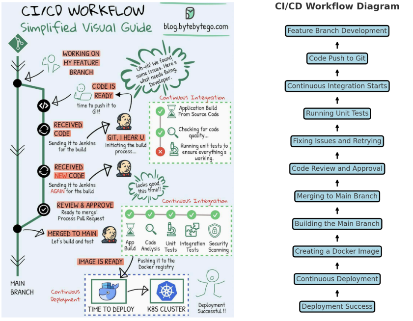

CI/CD (Continuous Integration and Continuous Deployment) is a process that automates the integration of code changes and the deployment of applications. Below is a detailed explanation of how it works based on the diagram provided:
Developers create a separate feature branch to work on new features or bug fixes. This ensures that their changes do not affect the stable main branch. Once the code is ready, it is pushed to a remote repository like GitHub or GitLab.
After the developer finishes the feature and has tested it locally, they push the code to the version control system (VCS). This triggers the CI process.
The system runs automated unit tests to ensure that the new changes work as expected and do not break existing functionality. If any test fails, the process halts, and the developer is notified to fix the issues.
If there are issues, the developer fixes the code and pushes it again to the repository. The CI process restarts, and the new code is built and tested. This cycle continues until all tests pass successfully.
Once the code passes all tests, it undergoes a manual review. This is where team members review the pull request to ensure the new changes meet the project standards and coding best practices.
After the code is approved, it is merged into the main branch. This is the main codebase, which reflects the latest stable version of the application.
The CI system automatically builds the main branch with the new changes. Further tests, such as regression tests and security scans, are run to ensure that the merged code is stable.
Once the application is built and passes all tests, it is packaged as a Docker image. This image can be pushed to a Docker registry (e.g., DockerHub, AWS ECR) for deployment.
Once the deployment to the Kubernetes cluster is successful, the new version of the application is live. This completes the CI/CD process, allowing new features and bug fixes to be delivered to users quickly and efficiently.
In summary, the CI/CD pipeline automates the integration of new code, testing, and deployment. By following this process, development teams can release updates quickly and with high confidence, knowing that automated tests and checks have been performed at each stage.